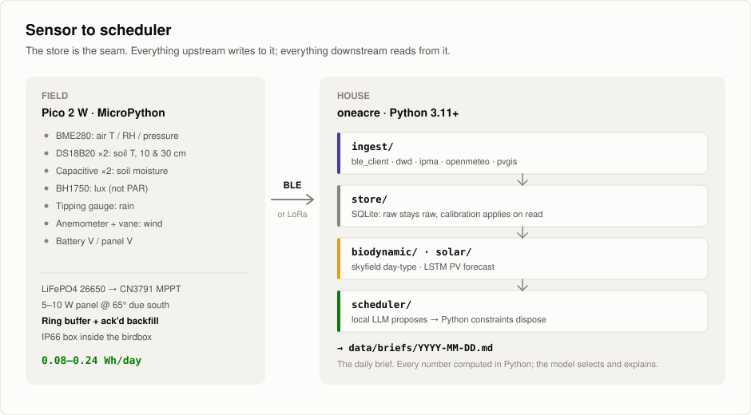
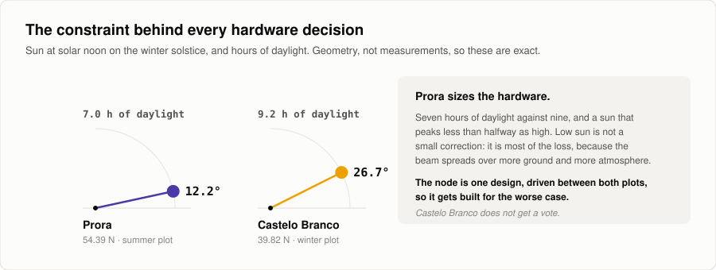
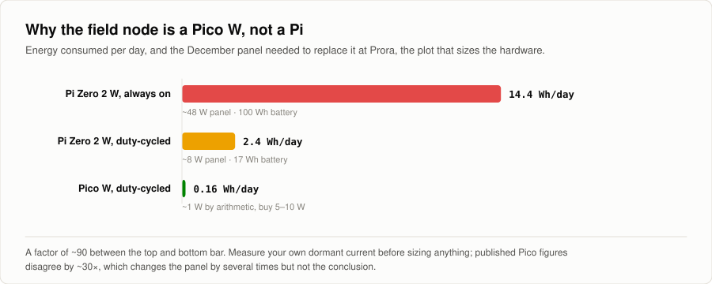
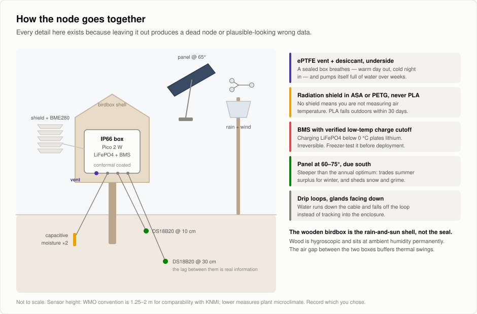
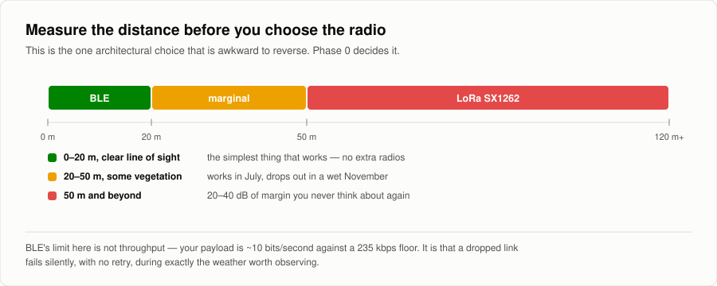
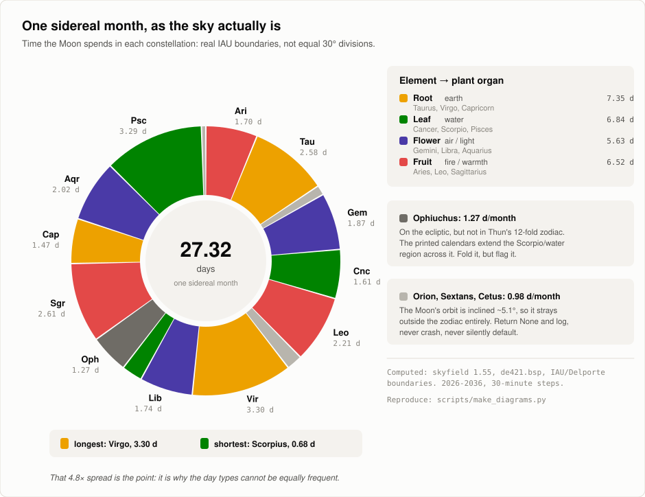
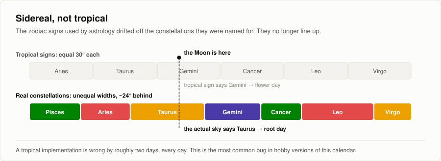
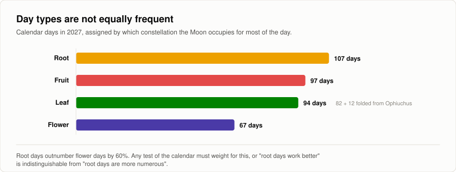
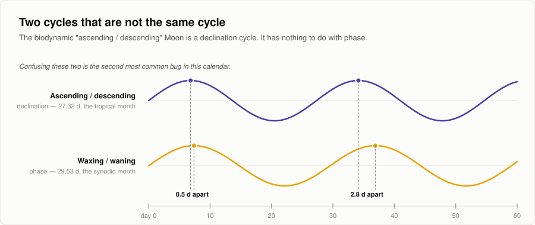
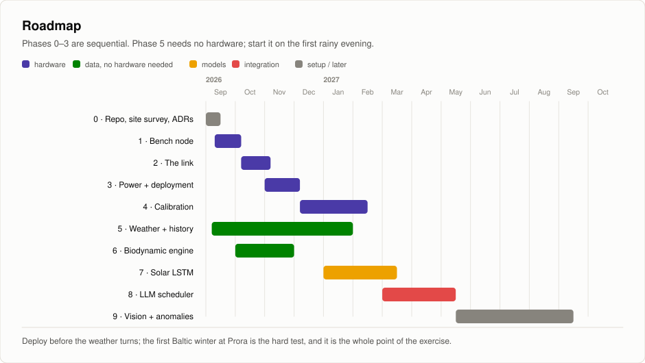

One Acre, Zero Dependency
Off-grid-Landwirtschaft, KI-gesteuert, auf zwei Parzellen 2.256 km voneinander entfernt: Prora im Sommer, Castelo Branco im Winter.
Ein solarbetriebenes Feldmodul (Birdbox) erfasst Boden- und lokale Wetterdaten. Über die Open-Meteo historical archive API (2006-2026) holen wir zwanzig Jahre regionale Wetterhistorie. Eurostat Agriculture Statistics liefert zusätzlich regionale Ertragszahlen, wenn auch grobe: jährlich, pro Hektar und pro Region, nicht pro Beet. Der Thun-Kalender liefert einen Pflanz- und Erntekalender auf Basis des Mondstands. Dieses Projekt berechnet ihn korrekt und prüft ihn, statt ihn vorauszusetzen.
Die Berechnungen laufen in Python. Ein lokal laufendes Modell (ML/LLM) legt die Ergebnisse nebeneinander und sagt voraus, welche Gemüse und Kulturen pro Anpflanzung den besten Ertrag bringen, wann gesät werden sollte und welche Fruchtfolgen auf einem kleinen Acker von 4.000 m² am besten funktionieren.
Ziel dieses Projekts ist es, Landwirten, Hobbygärtnern und Familien einen Halt zu geben, um im Kleinen wie im Großen verantwortungsvoll und erfolgreich biologisch anzubauen, auf Basis moderner Technik und uralter Konzepte, die die Erde schützen.
Status: Phase 0. Gebaut ist noch nichts. Der Plan schon.
{kind=link}

// überblick
Die Frage
Wie viel von den täglichen Entscheidungen eines kleinen Hofs kann eine wirklich netzunabhängige KI durchgängig übernehmen, vom Sensor bis zum Planer?
Das ist das ganze Projekt. Zwei Parzellen an entgegengesetzten Enden Europas, abwechselnd bewirtschaftet, öffentlich dokumentiert durch 2026 und 2027. Die vollständige Ausarbeitung, die ADRs und die Datenquellen stehen im Repo.
// stack
AI-Homestead
Das Repo. Bauplan, ADRs, Datenquellen und die Grafiken auf dieser Seite.
Projektübersicht
Kurzdossier. Die zwei Parzellen, die drei Zusagen, und was jede Datenquelle behaupten darf und was nicht.
// wo
Zwei Parzellen, 2.256 km voneinander entfernt
14,6 Breitengrade auseinander. Man folgt der Vegetationsperiode, statt gegen sie zu arbeiten.
Prora Sommer
- Wo
- Rügen, deutsche Ostseeküste
- Breite
- 54,39 °N
- Referenz
- DWD Arkona, Station 00183, 33 km nördlich
- Wintersonnenwende
- 7,0 h Tageslicht, Sonne kulminiert bei 12,2 °
Castelo Branco Winter
- Wo
- Zentralportugal, im Landesinneren
- Breite
- 39,82 °N
- Referenz
- IPMA-Langzeitreihen, dazu ERA5-Land
- Wintersonnenwende
- 9,2 h Tageslicht, Sonne kulminiert bei 26,7 °
// zusagen
Drei Dinge, bei denen dieses Projekt keine Abstriche macht
- 1 · Off-grid heißt off-grid. Kein Cloud-LLM in der täglichen Schleife.
- 2 · Jede Zahl trägt ihre Herkunft und ihre Fehlergrenze mit. Ein Sensor für 30 € mit ±0,3 pH darf pH nicht auf eine Nachkommastelle angeben.
- 3 · Der biodynamische Kalender ist eine Hypothese, die geprüft wird, keine Planungsregel.
// der feldknoten
Ein Pico, kein Pi
{kind=link}

{kind=link}

{kind=link}

{kind=link}

// daten
Zwei Parzellen, zwei Wetterdienste
Prora stützt sich auf DWD Arkona, 33 km entfernt, mit gemessener Strahlung ab 1947. Castelo Branco hat keine gleichwertige offene Historie und stützt sich auf ERA5-Land. Diese Asymmetrie wird nicht beschönigt.
// der kalender
Der Thun-Kalender, ehrlich umgesetzt
{kind=link}

{kind=link}

{kind=link}

{kind=link}

Die Evidenz stützt den Trigon-Effekt nicht. Der Kalender wird deshalb als Kovariate geloggt und geprüft, nie als Regel verwendet.
// modelle
Das LLM schlägt vor, Python entscheidet
Jede Zahl wird in getestetem Python berechnet. Das Modell wählt aus, priorisiert und erklärt und liefert JSON, das gegen ein Schema validiert ist. Worauf es abzielt: Ertrag pro Quadratmeter.
// fahrplan
Zehn Phasen
{kind=link}

MIT für den Code. Wetterdaten von DWD (CC BY 4.0), IPMA und Open-Meteo (CC-BY-4.0). Ephemeriden von JPL über skyfield. Es werden keine urheberrechtlich geschützten Kalenderdaten weiterverbreitet.